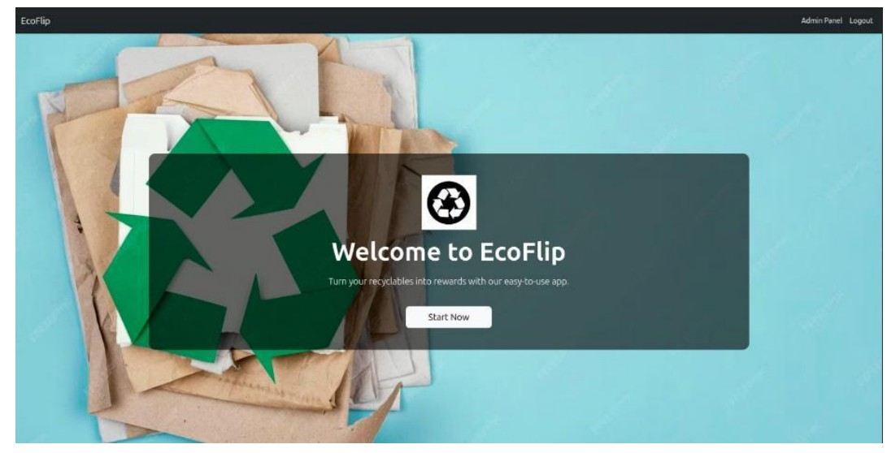
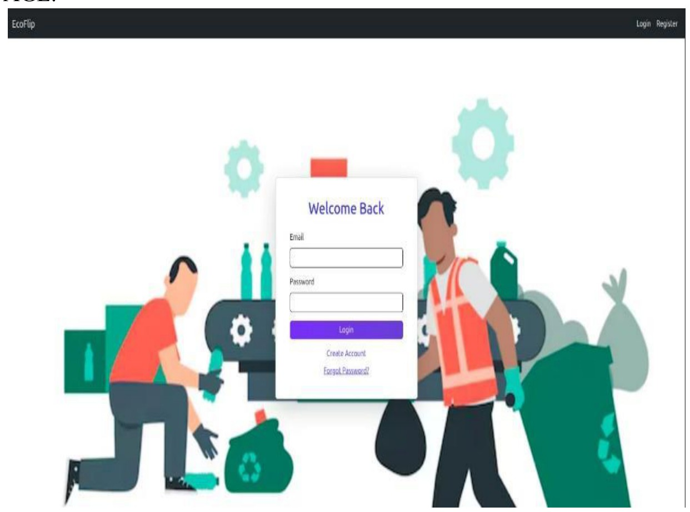
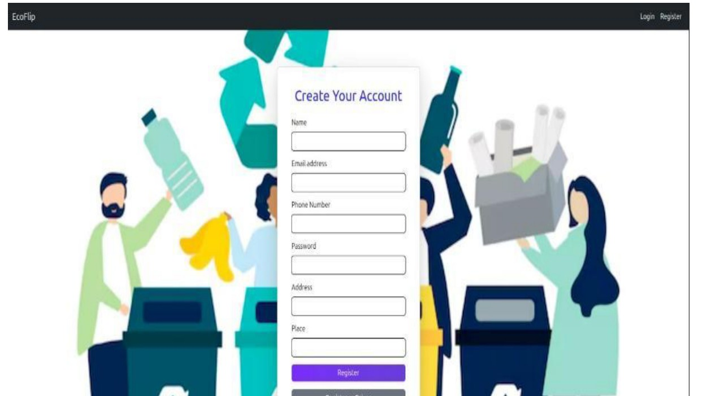
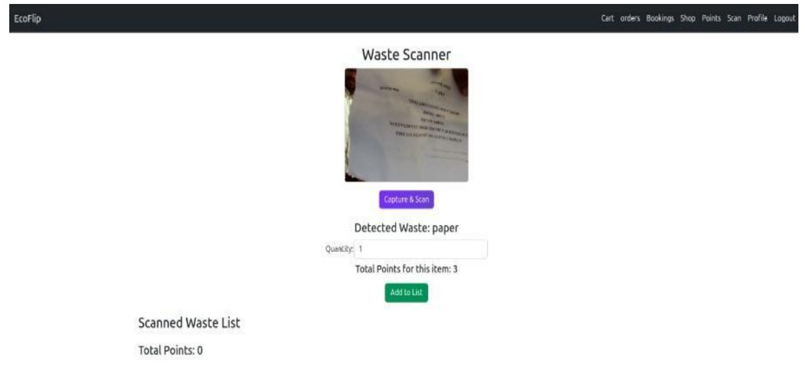
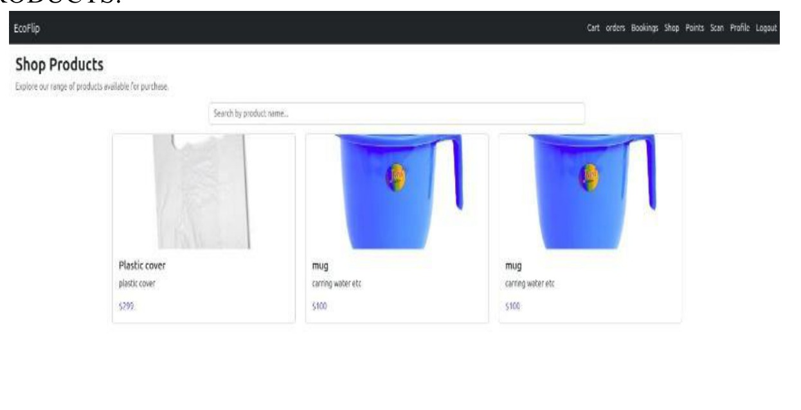
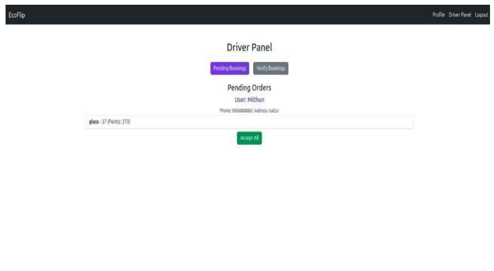
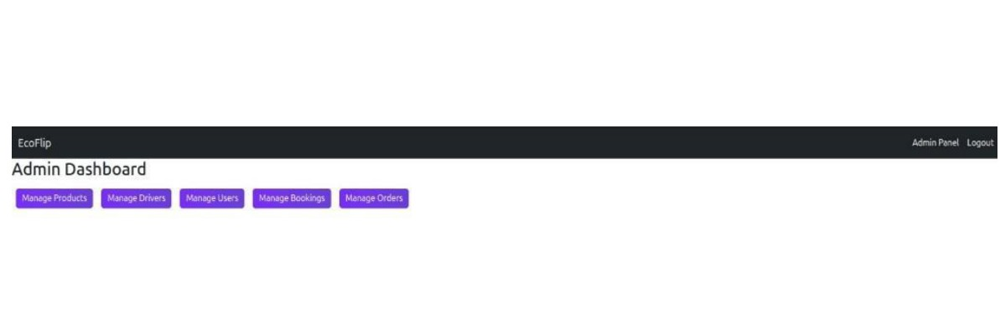
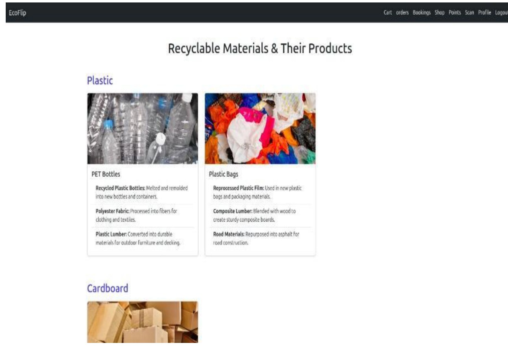
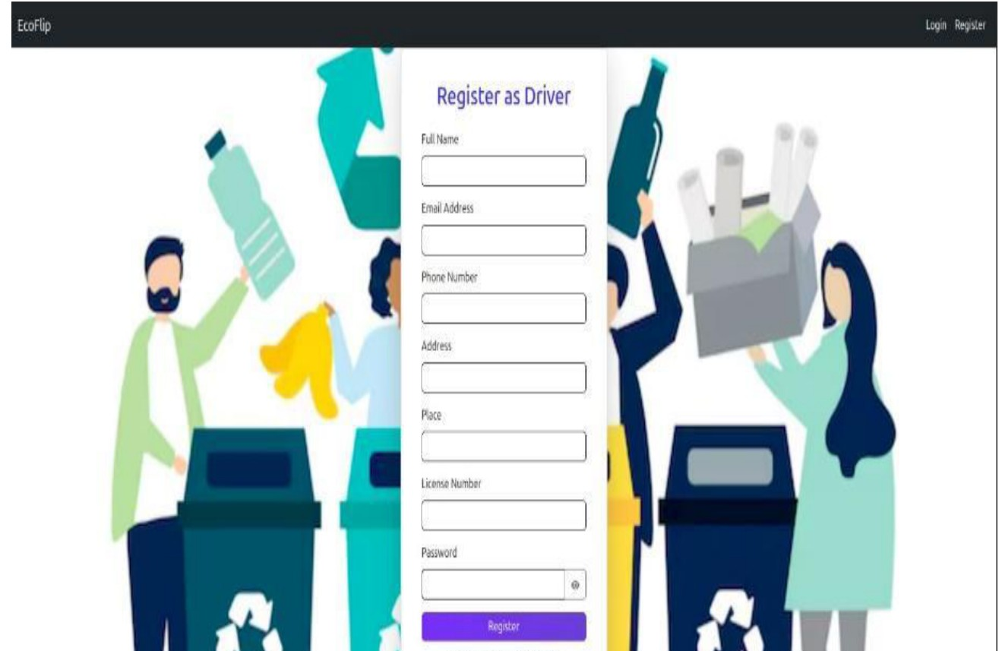

Explore the problem, proposed solution, workflow, interface screenshots, role-based modules, technical architecture, evaluation and future improvements.
The problem
Incorrect waste segregation, unclear disposal options and uncoordinated pickups can make recycling harder. Traditional processes may also offer little incentive for people to keep participating.
EcoFlip brings classification, collection coordination and recycling rewards into a single digital workflow.
The proposed solution
Users identify waste with an image-based AI model, enter quantity and request pickup. Drivers verify the collection, and the reward system assigns points that users can redeem in the shop.
Admins manage accounts, driver verification, pickup bookings and product listings.
How it works
From waste to reward
The intended user journey moves from identifying a material to arranging collection and encouraging future recycling.
01
Scan waste
The user captures or uploads an image. The CNN model predicts one of five categories: cardboard, glass, metal, paper or plastic.
02
Book pickup
The user provides waste quantity and location details to request a collection.
03
Driver verifies
The driver checks assigned requests, confirms collected waste and updates the pickup status.
04
Earn & redeem
Points are awarded based on verified waste type and quantity, then redeemed for listed products.
Inside the application
Project screenshots
These interface images are taken from the EcoFlip project report. Select any image to view it larger.

Landing page
The entry point introducing EcoFlip and its recycling purpose.

User login
Account access for registered users.

User registration
Account creation with user details.

AI waste scanner
Image-based material prediction and quantity entry.

Recycled-products shop
Browse items that connect recycling rewards to sustainable shopping.

Driver panel
Review assigned pickup requests and update collection status.

Admin dashboard
Administrative entry point for managing platform operations.

Materials & products
Explore material information and product listings.

Driver registration
Registration form for collection partners.
Screenshots are reproduced from the submitted project report and may appear small or slightly soft because they were embedded in the report document.
Role-based functionality
Three modules. One workflow.
Separate experiences help users, drivers and administrators complete their own responsibilities.
User module
Scan and classify waste, enter quantity, book pickups, check collection history, manage a profile, view reward points and shop for recycled products.
Driver module
View pending or assigned pickups, verify collection details, accept or reject requests when appropriate, update pickup status and manage profile information.
Admin module
Manage user and driver accounts, verify drivers, oversee bookings and orders, maintain the product catalogue and monitor system operations.
Technical overview
How the pieces connect
The project report describes a React frontend, Node.js/Express backend, MongoDB storage and a TensorFlow CNN classification model.
React UIUser, Driver, Admin
Node.js + ExpressREST API & application logic
AI ModelTensorFlow CNN classifier
MongoDBProfiles, pickups, points, products
Conceptual architecture based on the submitted report. The actual runtime configuration may differ by project version.
Computer vision
The CNN extracts visual features through convolution and pooling layers, then uses connected/dense layers to classify the image into cardboard, glass, metal, paper or plastic.
Data & API layer
The report describes REST endpoints for authentication, waste classification, pickup scheduling and rewards, with MongoDB storing application records and status updates.
Evaluation & next steps
What the project demonstrates
EcoFlip brings together an AI component and an operational workflow instead of treating waste classification as an isolated feature.
Model evaluation
The report states that the model was evaluated on 3,127 test samples across five material classes, using accuracy, precision, recall and F1-score. It reports 93% overall accuracy. In a production system, performance should continue to be validated against real-world images, lighting conditions and waste mixtures.
AccuracyPrecisionRecallF1-score
Future improvements
Potential next steps identified in the report include a more responsive interface, Android/iOS applications, recycling streaks and badges, multilingual support, and a broader catalogue of recycled products.